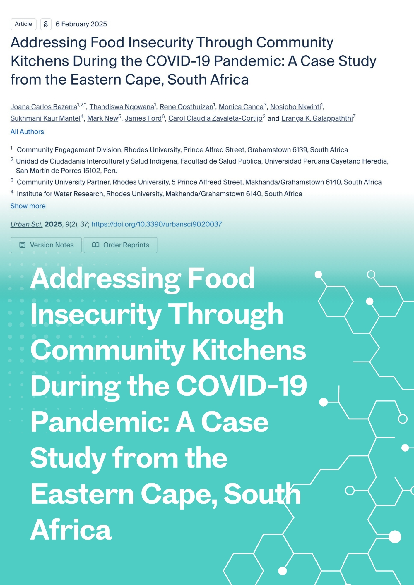
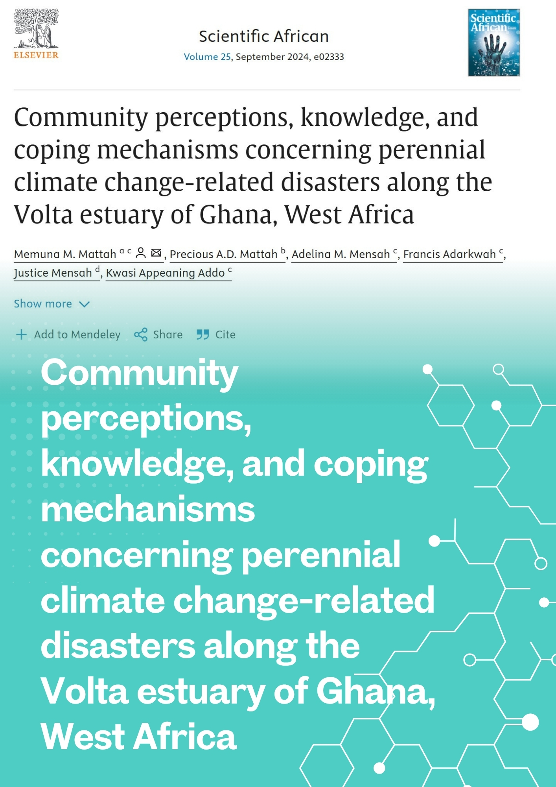
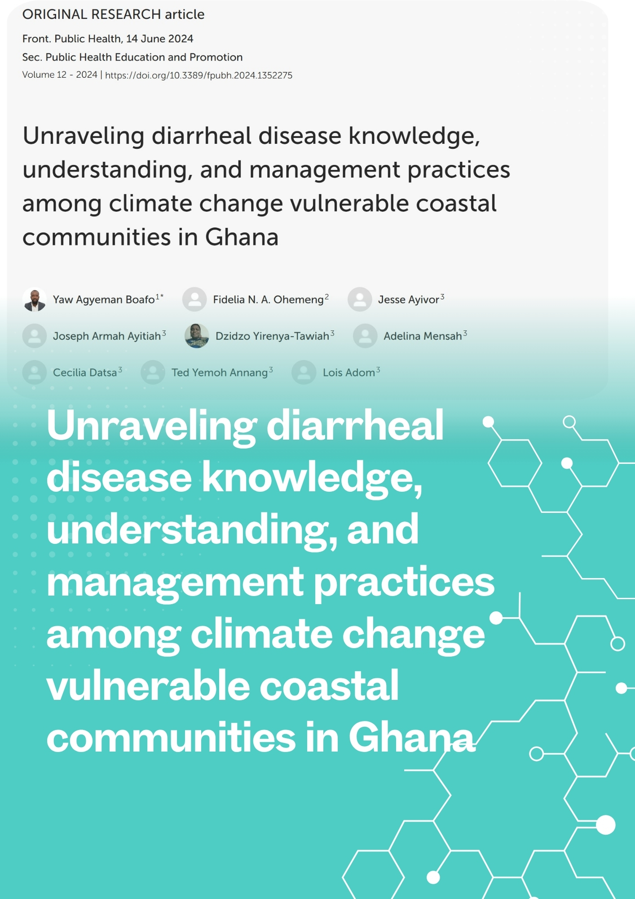
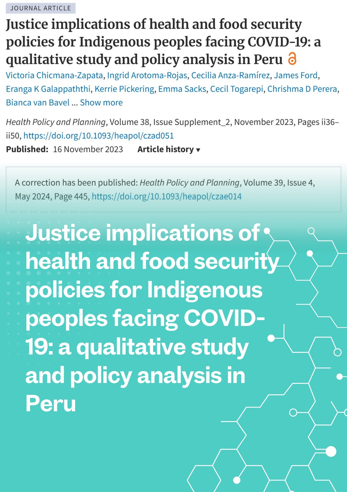
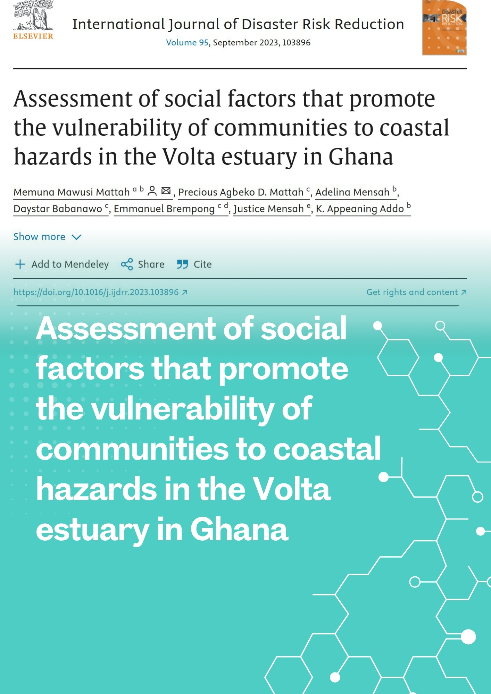
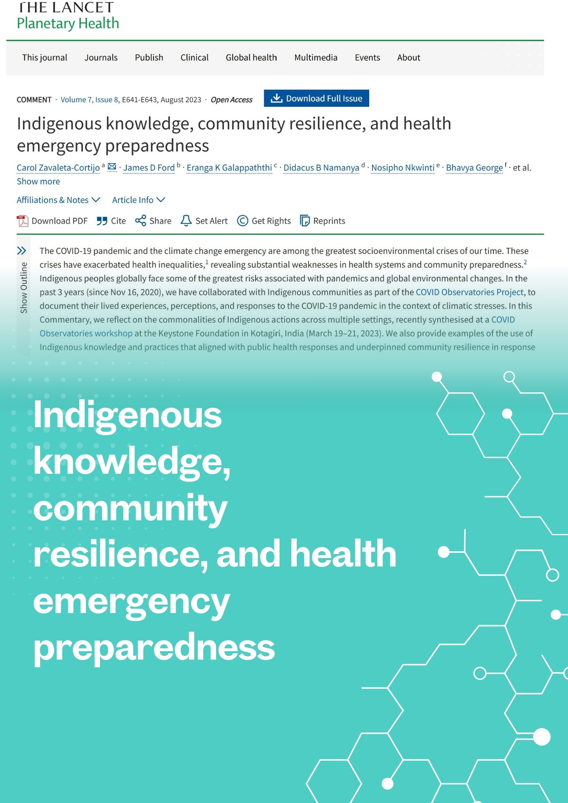
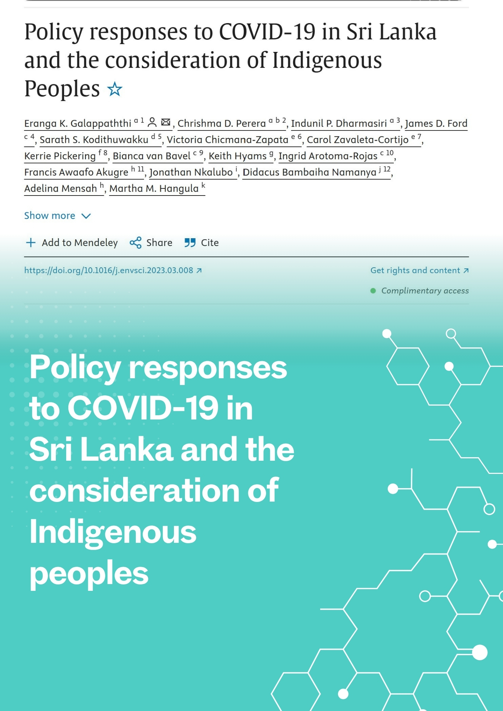
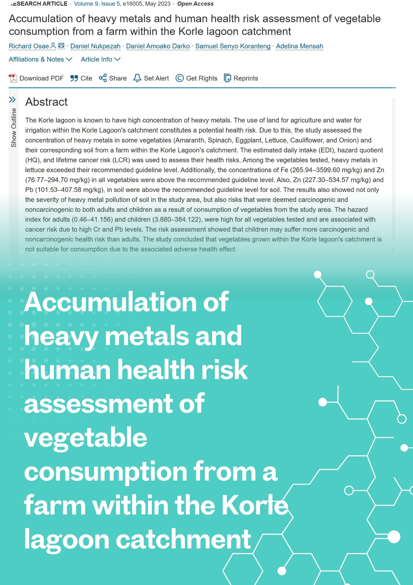
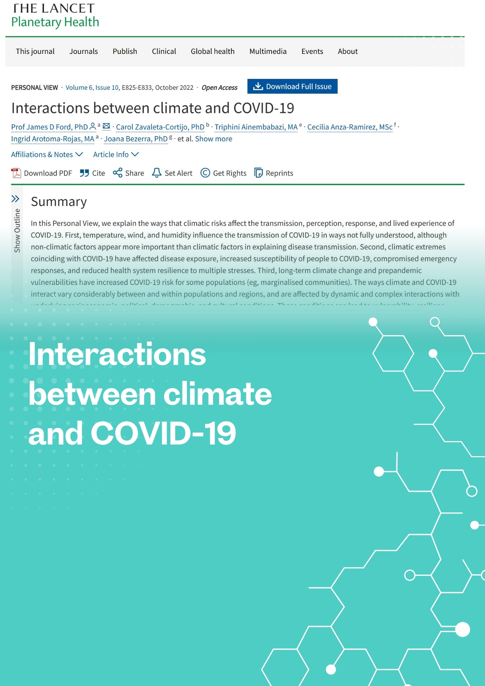

Dr. Adelina Maria Mensah - Recent Research & Academic Contributions

Urban Science, 9(2)
This study examines community kitchen initiatives as a response to food insecurity during the COVID-19 pandemic in the Eastern Cape, South Africa. The research analyzes the effectiveness of community-based food security interventions and their role in building resilience during crisis periods.

Scientific African, 25, e02333
This research explores community perceptions and adaptation strategies to climate change-related disasters in Ghana's Volta estuary. The study examines local knowledge systems, coping mechanisms, and community resilience in the face of recurring climate hazards.

Frontiers in Public Health, 12, 1352275
This study investigates community knowledge, attitudes, and practices regarding diarrheal disease management in climate-vulnerable coastal areas of Ghana. The research provides insights into local health management strategies and their effectiveness in the context of climate change impacts.

Health Policy and Planning, 39 (4), 445 – 445
This qualitative study examines the justice implications of health and food security policies affecting Indigenous peoples during the COVID-19 pandemic in Peru. The research analyzes policy responses and their differential impacts on Indigenous communities.

International Journal of Disaster Risk Reduction, 95, 103896
This research assesses social factors contributing to coastal vulnerability in Ghana's Volta estuary. The study identifies key socio-economic determinants that influence community resilience to coastal hazards and disaster risk reduction capacity.

The Lancet Planetary Health, 7 (8), E641-E643
This commentary explores the role of Indigenous knowledge systems in building community resilience and enhancing health emergency preparedness. The article emphasizes the importance of integrating traditional knowledge with modern health emergency response systems.

Environmental Science & Policy 144, 110 – 123
This study analyzes COVID-19 policy responses in Sri Lanka with particular attention to how these policies considered or impacted Indigenous peoples. The research examines the inclusivity and effectiveness of pandemic response measures across different communities.

Heliyon 9, e16005
This study assesses heavy metal contamination in vegetables grown in Ghana's Korle lagoon catchment area and evaluates the associated human health risks. The research provides important insights into food safety and environmental health in urban agricultural systems.

The Lancet Planetary Health, 6(10), e825-e833
This comprehensive review examines the complex interactions between climate change and COVID-19, exploring how environmental factors influence pandemic outcomes and how pandemic responses affect climate action.

Replies within 24 hours